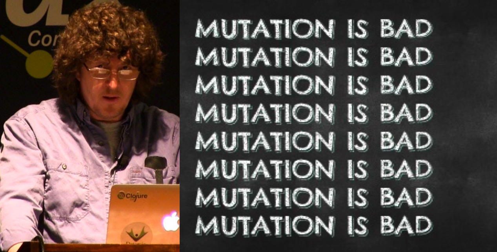
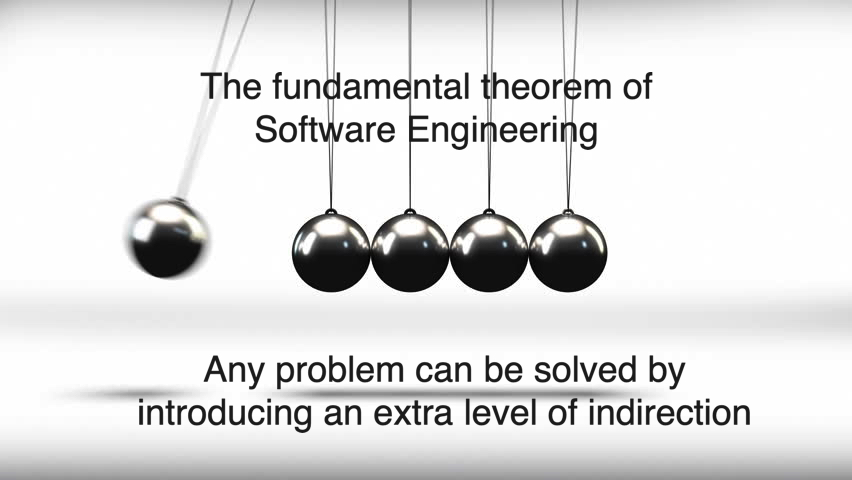
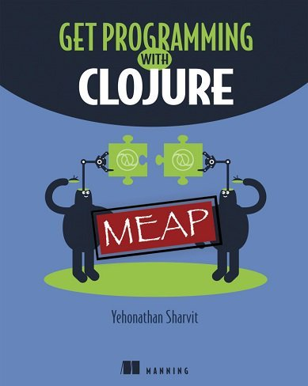

- Yehonathan Sharvit @viebel, viebel@gmail.com, LinkedIn
- A pragmatic theorist
- Author of Klipse
- A Web consultant: Full-Stack, clojure, clojurescript, node.js, react.js
- A disciple of the Bible
- A Blogger about Functional Programming (blog.klipse.tech)
- Third year in a row at ClojureX
- Writing a book with Manning "Get Programming with Clojure" - MEAP launch today
Polymorphism à la Clojure: "Functional Object Oriented Programming" is not an Oxymoron
(ns my.playground)
Intro
Polymorphism à la Clojure
Functional Object Oriented Programming
is not an Oxymoron
Functional Object Oriented Programming
is not an Oxymoron
Yehonathan Sharvit
@viebel, viebel@gmail.com
The Agenda
- Definitions and Rhetorics
- Functional Object Oriented Programming with maps
- Functional Object Oriented Programming with records
- Conclusion
Who am I?

Definitions and Rhetoric - Oxymoron
Rhetoric:
Rhetoric is the art of using language to convince.
Oxymoron:
An oxymoron is a rhetorical device containing words that seem to contradict each other.
Examples:
- The owner of the gallery told me that this picture was an original copy
- Do you like Virtual Reality?
- "Javascript is an awful language" is a true myth
- Yehonathan Sharvit is a pragmatic theorist
Purpose:
- Create a little bit of drama for the reader.
- Make a person stop and think, whether that’s to laugh or to wonder.
But it doesn’t always work, because…
Definitions and Rhetorics - Oxymoron
Definitions and Rhetorics - OOP vs. FP
Object Oriented Programming:
A programming paradigm based on the concept of objects, which contain:
- data, in the form of fields
- code, in the form of procedures, often known as methods.
Methods can access and often modify the data fields of the object with which they are associated.
Functional Programming:
A programming paradigm based on the concept of functions
A function:
- receives data and returns data
- avoids mutating data
Definitons and Rhetorics - Summary
Is "functional object oriented programming" an oxymoron?
Definitions and Rhetorics - OOP redefined
Object Oriented Programming:
A programming paradigm based on the concepts of objects and messages.
An object includes:
- a package of data
- a description of the operations that can be performed on that data
A message specifies one of the operations, but unlike a procedure, does not describe how the operation should be carried out.
Functional Programming:
A programming paradigm based on the concept of functions
A function:
- receives data and returns data
- avoids mutating data
What if sending a message was done through a function?
Definitions and Rhetorics - Functional OOP
Functional Object Oriented Programming:
A programming paradigm based on the concepts of functions, objects and messages.
A function:
- receives data and returns data
- avoids mutating data
An object includes:
- a package of data
- a description of the operations that can be performed on that data
- an operation avoids mutating data: it eithers returns data or a new version of the object
A message specifies one of the operations without describing how the operation should be carried out.
Messages are sent through a function.
Functional OOP with maps
What is the essence of a human?
- A human has a name
- A human has an appellation - how other humans refer to him
- A human can drink
- When a human drinks too much, he is drunk
Functional OOP with maps
A "constructor" is a function that returns a map with data and operations
(defn new-human-0 [name]
{:data {:name name
:drinks 0}
:ops {:appellation (fn [this] "(:appellation will be implemented soon")
:take-some-drinks (fn [this how-many] (str "(:take-some-drinks " how-many ") will be implemented soon"))
:drunk? (fn [this] "(:drunk? will be implemented soon")}})How does a human look like?
(new-human-0 "Adam")Data inspection is trivial
(:data (new-human-0 "Adam"))To send a message, we retrieve the function from the :ops map and call it with the object and the args.
(defn send-msg [obj op-name & args]
(let [op (get-in obj [:ops op-name])]
(apply op obj args)))Let’s ask Adam to take a drink
(send-msg (new-human-0 "Adam") :take-some-drinks 1)Functional OOP with maps - Queries
Methods that query data are easy to implement
(defn new-human-1 [name]
{:data {:name name
:drinks 0}
:ops {:appellation (fn [this] (get-in this [:data :name]))
:take-some-drinks (fn [this how-many] (str "(:take-some-drinks " how-many ") will be implemented soon"))
:drunk? (fn [this] (> (get-in this [:data :drinks]) 3))}})Let’s send a :appellation message to a human
(send-msg (new-human-1 "Adam") :appellation)Why do we need both :appellation operation and :name field?
Why do we need to store the name in the :data instead of accessing the lexical scope?
Functional OOP with maps - mutations
What about mutations?

Functional OOP with maps - "mutations" first attempt
Clojure is powerful: let’s use atoms and swap! them
(let [my-counter (atom 0)]
(dotimes [_ 10] (swap! my-counter inc))
@my-counter)Let’s make the :drinks data field an atom
(defn new-human-with-atoms [name]
{:data {:name name
:drinks (atom 0)}
:ops {:appellation (fn [this] (get-in this [:data :name]))
:take-some-drinks (fn [this how-many]
(swap! (get-in this [:data :drinks]) (partial + how-many))
this)
:drunk? (fn [this] (> @(get-in this [:data :drinks]) 3))}})Let’s ask Noah to take a couple of drinks
(let [noah (new-human-with-atoms "Noah")]
#_(send-msg noah :take-some-drinks 1)
#_(send-msg noah :take-some-drinks 1)
#_(send-msg noah :take-some-drinks 1)
#_(send-msg noah :take-some-drinks 1)
(send-msg noah :drunk?))That’s not what we are looking for: Now, we have different states for Noah.
The code is harder to reason about.
Remember: After a drink, a human is not the same human
Functional OOP with maps - changes without mutations
Clojure is famous for its immutable data structures.
Let’s leverage them!
Let’s use update-in
(update-in {:a {:b 0}} [:a :b] (partial + 3))(defn new-human [name]
{:data {:name name
:drinks 0}
:ops {:appellation (fn [this] (get-in this [:data :name]))
:drunk? (fn [this] (> (get-in this [:data :drinks]) 3))
:take-some-drinks (fn [this how-many]
(update-in this
[:data :drinks]
(partial + how-many)))}})Let’s create an object and "mutate" it:
(let [abraham (new-human "Abraham")]
#_(send-msg abraham :take-some-drinks 1)
#_(send-msg abraham :take-some-drinks 1)
#_(send-msg abraham :take-some-drinks 1)
#_(send-msg abraham :take-some-drinks 1)
(send-msg abraham :drunk?))Abraham looks much more resistant to alcohol than Noah!
Let’s explore the data
(let [abraham (new-human "Abraham")]
(send-msg abraham :take-some-drinks 1)
(send-msg abraham :take-some-drinks 1)
(send-msg abraham :take-some-drinks 1)
(send-msg abraham :take-some-drinks 1)
(:data abraham))When we manipulate a map in Clojure, we create new versions of the map.
(let [abraham (new-human "Abraham")
abraham-1 (send-msg abraham :take-some-drinks 1)
abraham-2 (send-msg abraham-1 :take-some-drinks 1)
abraham-3 (send-msg abraham-2 :take-some-drinks 1)
abraham-4 (send-msg abraham-3 :take-some-drinks 1)]
(send-msg abraham-4 :drunk?))The code looks shorter with a thread macro
(-> (new-human "Abraham")
(send-msg :take-some-drinks 2)
(send-msg :take-some-drinks 3)
(send-msg :drunk?))Functional OOP with maps - Polymorphism
Let’s create another object that implements the same operations but behaves differently…
- A king’s appellation contains a title
- A king is drunk after 5 drinks
(defn new-king [name]
{:data {:name name
:drinks 0}
:ops {:appellation (fn [this] (str "King " (get-in this [:data :name])))
:drunk? (fn [this] (> (get-in this [:data :drinks]) 5))
:take-some-drinks (fn [this how-many]
(update-in this
[:data :drinks]
(partial + how-many)))}})When we send a message, we don’t know what procedure is going to be called
David, the king
(let [david (new-king "David")]
(send-msg david :appellation))David, the human
(let [david (new-human "David")]
(send-msg david :appellation))Both pieces of code that send the message look the same, but the behaviour is different.
Functional OOP with maps - summary
We have created our own Object Oriented "system"
(defn new-human [name]
{:data {:name name
:drinks 0}
:ops {:appellation (fn [this] (get-in this [:data :name]))
:drunk? (fn [this] (> (get-in this [:data :drinks]) 3))
:take-some-drinks (fn [this how-many]
(update-in this
[:data :drinks]
(partial + how-many)))}})
(defn send-msg [obj op-name & args]
(let [op (get-in obj [:ops op-name])]
(apply op obj args)))But it’s not really a system
- Custom :data and :ops structure
- Custom send-msg function
- We have messages but we don’t have interfaces
- Methods access data trough this instead of lexical scope
Functional OOP in Clojure - The 5 commandments
- Thou Shalt Not Encapsulate Information (Transparency)
- Thou Shalt Not Mutate an Object (Immutability)
- Thou Shalt Only Program to an Interface (Polymorphism)
- Thou Shalt Not Derive from a Concrete Class (Simplicity)
- Let Thy Friend Extend a Class as Thyself (Extensibility)
Functional OOP with Records and Protocols
In Clojure there are three ways to create an object (it’s called a datatype):
- deftype
- defrecord
- reify
Now, we will focus on defrecord
Functional OOP with Records and Protocols
First, we define a protocol:
(defprotocol IHuman
(appelation [this])
(drunk? [this])
(take-some-drinks [this how-many]))Then, a record that implements the protocol:
(defrecord Human [name drinks]
IHuman
(appelation [this] name)
(drunk? [this] (> drinks 3))
(take-some-drinks [this how-many]
(update this
:drinks
(partial + how-many))))And a constructor
(defn create-human [name]
(Human. name 0))Let’s create a human and ask him to take some drinks
(let [abraham (create-human "Abraham")]
(-> abraham
(take-some-drinks 11)
drunk?))Beware of this common pitfall
(let [adam (create-human "Adam")]
(take-some-drinks adam 10)
(drunk? adam))Functional OOP with Records - constructors
Why do we need a constructor?

Records and Protocols - Transparency
1. Thou Shalt Not Encapsulate Information (Transparency)
(create-human "Adam")(take-some-drinks (create-human "Adam") 10)Records and Protocols - Immutability
2. Thou Shalt Not Mutate an Object (Immutability)
(let [adam (create-human "Adam")]
(take-some-drinks adam 10)
adam)Records and Protocols - Strict Polymorphism
3. Thou Shalt Only Program to an Interface (Strict Polymorphism)
The syntax doesn’t allow adding a method to a record without specifying a protocol
(defrecord IAmAlone []
(foo [this] (str "sniff...")))If we add a method that is not part of the protocol
(defrecord IAmAlone []
IHuman
(foo [this] (str "sniff...")))Bad things happen
(foo (IAmAlone.))Records and protocols - Simplicity
4. Thou Shalt Not Derive from a Concrete Class (Simplicity)
Concrete derivation is bad!
Clojure blocks it. You can try composition
Records and Protocols - Extensibility
5. Let Thy Friend Extend a Class as Thyself (Extensibility)
In order to add new functionality to a record, we have to create a new protocol:
(defprotocol IStatus
(status [this]))Although the Human record is already defined, we can still extend it.
A record is never closed!
(extend-type Human
IStatus
(status [this] (str (:name this) " has drunk " (:drinks this) " drinks")))Now, Adam has a status:
(status (create-human "Adam"))Functional OOP in Clojure - Records are wacky maps
Records look like maps
(println (Human. "Adam" 5))They have keys
(keys (Human. "Adam" 5))keys are functions
(:name (Human. "Adam" 5))But records are not functions
((Human. "Adam" 5) :name)You can assoc them new keys
(println (assoc (Human. "Adam" 5) :books 88))But be careful when you dissoc them
(type (dissoc (Human. "Adam" 5) :name))One last thing
In Clojure, everything can behave like a function
#_(extend-type Human
IFn
(-invoke
([this key]
(get this key))))#_((create-human "Adam") :name)Funny thought: In Clojure, even functions are protocols.
Conclusion
What is the essence of Clojure?
- LISP syntax ?
- Functional programming ?
- Immutability ?
Questions
Early access version of the book
https://tinyurl.com/get-clojure
DISCOUNT CODE: mlsharvit (50% off)
Valid until December 9, 2018

powered by Klipse /